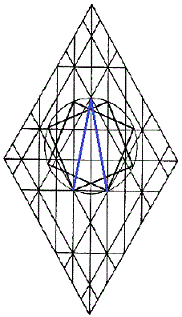
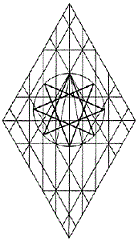
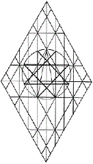

Eight Points
Octagonal representations are commonly
used in the construction of mandalas for use in meditation,
particularly in Buddhism. Note how precisely this eight-point star
aligns with the cubit of the vertical Adam Kadmons in the Crown
Diamond display. By connecting the eight points in the manner shown
above, congruent squares juxtaposition in
an akimbo pattern, suggestive of the orientation of practitioners
of Hatha yoga. The square is present in the mishkan, also.

The octagram-the star with eight
points-is a dynamic common to the churches of
Ephesus and
Philadelphia, as well as to the church at
Laodicea, where it assumes upright and inverted positions;
the dynamic is also repositioned by inversion within the star
appearing at
Thyatira.
The circumferences of the circles surrounding each star or polygon in these drawings are obtained by circumscribing various angles or areas of the stars of the Churches of Asia. The end points of each measurement equal the width of the vertical Adam Kadmon; and that measurement is then employed as a cubit, to be positioned as chords laid end-to-end along the circles so defined.
After the end points of the cubit are marked, they are then connected, each to an opposite, by lines drawn from point to point as logic suggests. Thus, every regular star so extrapolated from the stars of the churches of Asia is accompanied by a regular polygon sharing the same end points, were the adjacent points to be connected in sequence.
Not every possible extrapolation is presented in these pages. Ultimately, every angle and discrete area of the stars of the Churches of Asia should be measured and analyzed by means of the tools of mathematics, the results then being studied for spiritual implications.
| Sacred Geometry | ||
|
site |
Churches of Asia |
book |